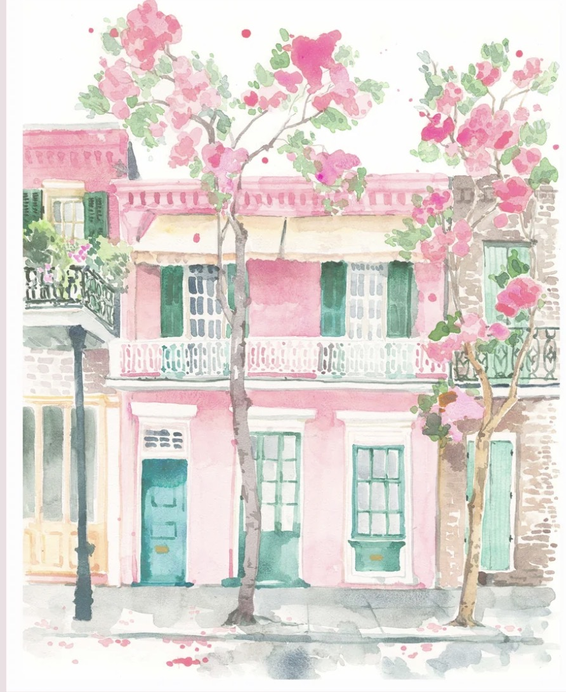
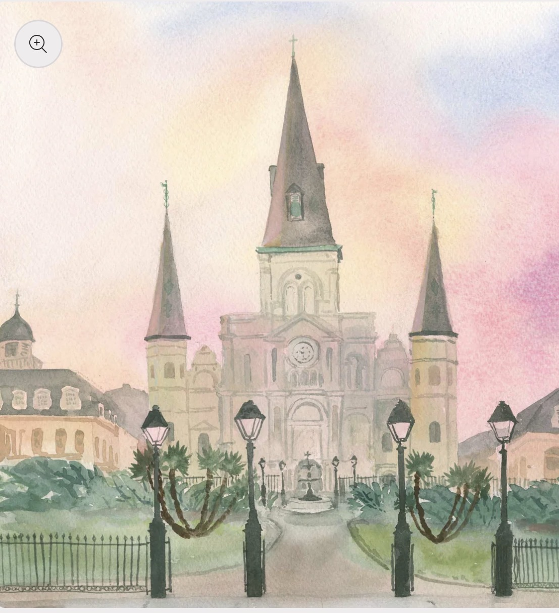
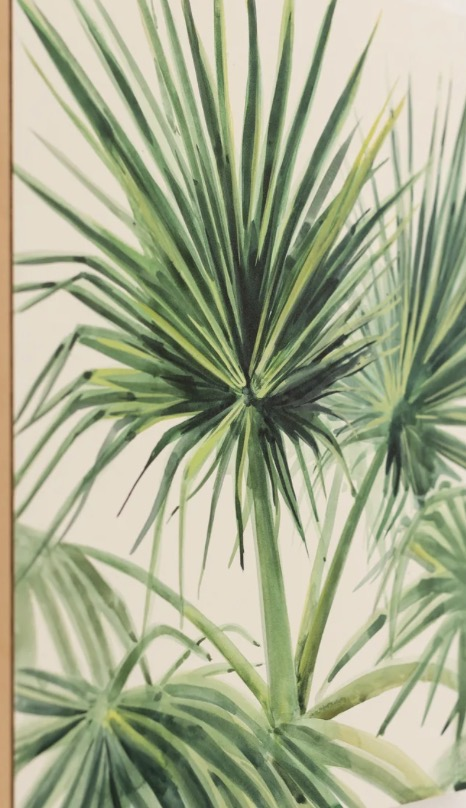

STAY
Charming homes, boutique hotels & pretty places to recharge.
EXPLORE →
good friends, great food,
unforgettable nights ♥
CURATED EXPERIENCES FOR AN EPIC WEEKEND
IN THE BIG EASY


your perfect weekend starts here ♥
Designed like a hand-painted travel journal, with the best of New Orleans organized into the moments that make a bachelorette weekend unforgettable.
Charming homes, boutique hotels & pretty places to recharge.
EXPLORE →
Crawfish boils, beignets & beautiful tables worth dressing up for.
EXPLORE →
Second lines, live music, day adventures & only-in-NOLA experiences.
EXPLORE →
French 75s, rooftops, wine bars & cocktails worth dressing up for.
EXPLORE →
Nightlife, dancing, bottle service & celebrations after dark.
EXPLORE →
Itineraries, timing, transportation & the details that keep it easy.
EXPLORE →your own New Orleans home base ♥
Maison St. LaFleur is a historic 1861 boutique mansion on Esplanade Avenue at the edge of the French Quarter, with three bedrooms for up to eight guests. It is about 50 yards from the streetcar and an easy walk to the French Quarter and Frenchmen Street.
For a bachelorette weekend, the advantage is that the stay can become part of the itinerary: gather the group for an available Creole cooking experience, add a cocktail experience before dinner, then step out into the city. From the house, you are positioned for Frenchmen music, French Quarter nightlife, and many of New Orleans' best restaurants without making transportation the center of your weekend.
Historic architecture, balconies, courtyard atmosphere and room for the group make it feel less like checking into a hotel and more like having your own New Orleans house for the weekend.
VISIT MAISON ST. LAFLEUR ↗
powdered sugar is part of the dress code ♥
Start with an iconic beignet stop, but do not make the mistake of treating New Orleans dining as an afterthought. Build at least one dinner around a room that feels special enough for the occasion and a kitchen that is worth the reservation.
Upscale, atmospheric, distinctly New Orleans — and chosen for a bachelorette weekend that cares as much about dinner as the photos.
A jewel-box Gulf seafood experience: choose the intimate five-course Club Room tasting menu or oysters, Champagne, martinis and caviar at the Oyster Bar.
BEST FOR: A GLAM SEAFOOD NIGHT ↗ CAJUN · UPTOWNA story-driven, multi-course celebration of Louisiana fishermen, farmers and bayou cooking. Private tables make it especially compelling for a group dinner.
BEST FOR: A TRUE LOUISIANA EXPERIENCE ↗ WAREHOUSE DISTRICTChef Nina Compton's acclaimed mix of Caribbean influence, French technique and Louisiana ingredients, paired with a standout cocktail program and warm, refined room.
BEST FOR: COCKTAILS + DINNER ↗ BYWATER · TASTING MENUAn intimate ten-course progressive tasting experience with natural wine in a double-shotgun house. Exceptional for a smaller bridal group; tables seat up to four.
BEST FOR: THE FOOD-OBSESSED CREW ↗ FRENCH QUARTER · FINE DININGPolished, celebratory dining with imaginative takes on classic Cajun and Creole cuisine, plus private dining rooms if you want the dinner to feel like an event.
BEST FOR: THE BIG DRESS-UP DINNER ↗ LOWER FRENCH QUARTERA modern European brasserie with Creole influence, elegant cooking, strong wine direction and an intimate French Quarter corner setting.
BEST FOR: PARIS-MEETS-NOLA ENERGY ↗ FRENCH QUARTER · ITALIANAn enduring French Quarter favorite with Sicilian roots and an intimate, homey atmosphere — ideal when the group wants something romantic and classic rather than trendy.
BEST FOR: A WARM CLASSIC DINNER ↗
one block, five songs, change your plans ♥
Frenchmen works best as a loose crawl. Start early enough to hear a first set, peek into the rooms as you walk, and stay where the band is right. The Spotted Cat, d.b.a., Blue Nile and Maison are clustered close enough that the night can evolve without a rigid schedule.
cocktails before chaos ♥
Use cocktail hour as the hinge between day and night: a balcony drink, Champagne before dinner, or a serious cocktail bar where everyone can arrive dressed and regroup before the evening gets louder.
the best party is not always on Bourbon ♥
Do one high-energy night if that is the group's vibe, but balance it with live music, cocktail bars and a dinner that lets everyone enjoy the city instead of spending the entire weekend in one entertainment corridor.
have fun — just know the terrain ♥
Making Bourbon Street the whole itinerary. See it, laugh, take the photo, then keep exploring.
Over-scheduling. New Orleans rewards wandering, long dinners and changing plans when you hear a better band around the corner.
Long walks alone late at night. Keep the group together and use a rideshare when the next stop is not an easy, busy walk.
Ignoring heat, weather and shoes. A beautiful itinerary is less beautiful when everyone is exhausted before dinner.

Book the house, one special dinner, one signature New Orleans experience and the hardest reservation first. Leave enough white space for beignets, a Frenchmen detour, a courtyard drink or the place someone discovers while walking.
START WITH WHERE YOU'LL STAY →